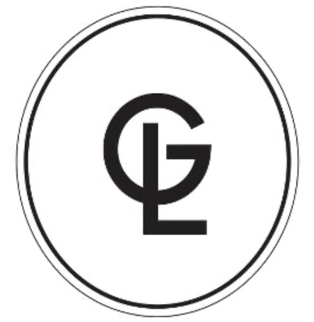

LILY GOURMET
L & N Gourmet SARL
DEMANDE DE CONGÉ
Date : Rabat, le 04/06/2026
Nom et Prénom : ABOU EL FARAJ Meryem
Numéro CNSS : 9725039
Fonction : Contrôleur interne
Je soussigné(e), sollicite par la présente l'autorisation de bénéficier d'un congé,
conformément aux dispositions et procédures en vigueur au sein de l'entreprise.
| Type de congé | Congé annuel + récupération |
| Période demandée | du 10/06/2026 au 15/06/2026 |
| Jour de repos non décompté | 14/06/2026 (Dimanche) |
| Jour férié non décompté | — |
| Nombre de jours décomptés | 5 jours |
| Dont récupération |
2 jours
10/06/2026Récup d'un jour travaillé
11/06/2026Récup d'un jour férié
|
| Dont congé annuel | 3 jours · du 12/06/2026 au 15/06/2026 |
| Solde avant congé | 5,5 jours |
| Solde après congé | 0,5 jour (annuel 0 · récup 0,5) |
Signatures et validation
| Fonction | Nom | Signature & Date |
|---|
| Employé(e) | ABOU EL FARAJ Meryem | |
| Direction | | |
NB : Toute demande de congé doit être validée par : Employé(e) – Direction, et signée avant la prise du congé.
L & N Gourmet SARL au capital de 200.000 DH
6 rue Soumaya, Agdal – Rabat, Maroc · RC : 99941 · Patente : 70185234 · IF : 3367629 · CNSS : 9725039 · ICE : 001701634000029
LILY GOURMET
L & N Gourmet SARL
DEMANDE DE CONGÉ
Date : Rabat, le 04/06/2026
Nom et Prénom : BENOMAR Salma
Numéro CNSS : 8451023
Fonction : Vendeuse
Je soussigné(e), sollicite par la présente l'autorisation de bénéficier d'un congé,
conformément aux dispositions et procédures en vigueur au sein de l'entreprise.
| Type de congé | Congé annuel |
| Période demandée | du 15/06/2026 au 20/06/2026 |
| Jour de repos non décompté | 19/06/2026 (Vendredi) |
| Jour férié non décompté | — |
| Nombre de jours décomptés | 5 jours |
| Dont récupération | 0 jour |
| Dont congé annuel | 5 jours · du 15/06/2026 au 20/06/2026 |
| Solde avant congé | 14 jours |
| Solde après congé | 9 jours (annuel 9 · récup 2) |
Signatures et validation
| Fonction | Nom | Signature & Date |
|---|
| Employé(e) | BENOMAR Salma | |
| Direction | | |
NB : Toute demande de congé doit être validée par : Employé(e) – Direction, et signée avant la prise du congé.
L & N Gourmet SARL au capital de 200.000 DH
6 rue Soumaya, Agdal – Rabat, Maroc · RC : 99941 · Patente : 70185234 · IF : 3367629 · CNSS : 9725039 · ICE : 001701634000029
LILY GOURMET
L & N Gourmet SARL
DEMANDE DE CONGÉ
Date : Rabat, le 04/06/2026
Nom et Prénom : BERBICH Hamza
Numéro CNSS : 7732891
Fonction : Livreur
Je soussigné(e), sollicite par la présente l'autorisation de bénéficier d'un congé,
conformément aux dispositions et procédures en vigueur au sein de l'entreprise.
| Type de congé | Récupération |
| Période demandée | du 10/06/2026 au 11/06/2026 |
| Jour de repos non décompté | — (aucun dans la période) |
| Jour férié non décompté | — |
| Nombre de jours décomptés | 2 jours |
| Dont récupération |
2 jours
10/06/2026Récup d'un jour férié
11/06/2026Récup d'un jour travaillé
|
| Dont congé annuel | 0 jour |
| Solde avant congé | 18,5 jours |
| Solde après congé | 18,5 jours (annuel 18 · récup 0,5) |
Signatures et validation
| Fonction | Nom | Signature & Date |
|---|
| Employé(e) | BERBICH Hamza | |
| Direction | | |
NB : Toute demande de congé doit être validée par : Employé(e) – Direction, et signée avant la prise du congé.
L & N Gourmet SARL au capital de 200.000 DH
6 rue Soumaya, Agdal – Rabat, Maroc · RC : 99941 · Patente : 70185234 · IF : 3367629 · CNSS : 9725039 · ICE : 001701634000029
LILY GOURMET
ل & ن غورمي ش.م.م
طلب إجازة
التاريخ : الرباط، في 04/06/2026
الاسم الكامل : أبو الفرج مريم
رقم الضمان الاجتماعي : 9725039
الوظيفة : مراقبة داخلية
أصرّح أنا الموقّع(ة) أدناه، بأنني أطلب بموجب هذا الإذن للاستفادة من إجازة،
وفقًا للأحكام والإجراءات المعمول بها داخل المؤسسة.
| نوع الإجازة | إجازة سنوية + استرجاع |
| الفترة المطلوبة | من 10/06/2026 إلى 15/06/2026 |
| يوم الراحة غير المحتسب | 14/06/2026 (الأحد) |
| يوم عطلة غير محتسب | — |
| عدد الأيام المحتسبة | 5 أيام |
| منها استرجاع |
يومان
10/06/2026استرجاع يوم عمل
11/06/2026استرجاع يوم عطلة
|
| منها إجازة سنوية | 3 أيام · من 12/06/2026 إلى 15/06/2026 |
| الرصيد قبل الإجازة | 5,5 أيام |
| الرصيد بعد الإجازة | 0,5 يوم (سنوية 0 · استرجاع 0,5) |
التوقيعات والمصادقة
| الصفة | الاسم | التوقيع والتاريخ |
|---|
| الموظف(ة) | أبو الفرج مريم | |
| الإدارة | | |
ملاحظة : يجب أن يُصادَق على كل طلب إجازة من طرف : الموظف(ة) – الإدارة، وأن يُوقَّع قبل الاستفادة من الإجازة.
L & N Gourmet SARL au capital de 200.000 DH
6 rue Soumaya, Agdal – Rabat, Maroc · RC : 99941 · Patente : 70185234 · IF : 3367629 · CNSS : 9725039 · ICE : 001701634000029